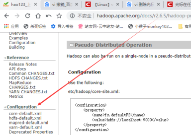
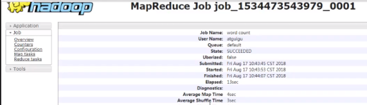
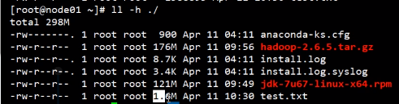

hadoop集群搭建的完整总结：
关于虚拟机的创建在
包括单节点、pseudo、完全分布式的搭建
包括日志历史服务器，ssh配置，时间同步，初始化，启动
不包括安全模式和HA的设置，在另一篇文章：
1.1 src
1.1.1 note
{1} hdfs是个集群，集群上的节点运行着很多进程，一个进程代表一个角色，一个程序，一个后台服务，一个daemon。
{2} 因为是用java写的，所以是jvm进程
1.1.2 hadoop官网
{1} 左侧下方有documentation，所有版本都有，有的需要手动改url的版本号
{2} ssh是用来远程登录的，sshd是其后台服务，
{3} ssh远程登陆不会加载登录的计算机的etc/profile，交互是bash启动的时候才会去读取etc/profile，所以jdk需要2次配置，一次是安装jdk时在当前计算机的/etc/profile配，第二次在hadoop脚本中，使用绝对路径指明命令的位置。
{4} 3种模式
[1] 单例模式：使用本地文件系统
[2] 伪分布式：一台计算机中，把所有角色进程启动
[3] 完全分布式：多个节点搭建集群，每台计算机都开角色进程
1.1.3 有100台机器，如何优雅的搭建集群并启动？？？
{1} rsync工具 + 群起命令
1.2 linux和虚拟机配置
1.2.1 虚拟机
{1} 创建
{2} 安装系统
1.2.2 从standard克隆
1.2.3 ssh免密钥
1.2.4 时间同步
1.3 hadoop的安装
1.3.1 解压
{1} 压缩包放在/opt/software
{2} 安装HADOOP，解压到/opt/module/下
1.3.2 env
{1} 在/etc/profile中配置HADOOP_HOME的环境变量且把bin和sbin都给追加到PATH中
1.3.3 hadoop目录结构
{1} bin
[1] 命令
{2} etc
[1] linux的etc存的也是配文，里面存了所有的配文
{3} include
[1] 其他代码的文件
{4} lib
[1] 没存jar，存的是本地库，jar存在share
{5} sbin
[1] 用来启动停止的命令
{6} share
[1] 存jar，里面按各种组件分类存jar
1.4 配文
1.4.1 分2类，默认和自定义，2者会有重复的，自定义优先级高。
{1} 默认，在jar中，在官方文档左下角也有
要获取的默认文件 | 文件存放在Hadoop的jar包中的位置 |
[core-default.xml] | hadoop-common-2.7.2.jar/ core-default.xml |
[hdfs-default.xml] | hadoop-hdfs-2.7.2.jar/ hdfs-default.xml |
[yarn-default.xml] | hadoop-yarn-common-2.7.2.jar/ yarn-default.xml |
[mapred-default.xml] | hadoop-mapreduce-client-core-2.7.2.jar/ mapred-default.xml |
{2} 自定义
[1] core-site.xml、hdfs-site.xml、yarn-site.xml、mapred-site.xml四个配置文件存放在$HADOOP_HOME/etc/hadoop这个路径上，这个路径也是hadoop会加载的路径，用户可以根据项目需求重新进行修改配置。
1.4.2 summary
一共8个
{1} 3个env
{2} 4个site
[1] core-site.xml
(1) fs
(2) 持久化目录
(3) zk地址
[2] hdfs-site.xml
(1) 副本数
(2) NN，DN的持久化目录，一般用默认的
(3) SSN的地址
(4) HA的配置
[3] yarn-site.xml
(1) reducer获取数据的方式
(2) RM的地址
(3) 日志聚集
1st 去8088点log就会跳转到历史服务器上，历史服务器在mapred上
(4) 日志保留时间
[4] mapred-site.xml
(1) mr运行在yarn上，on yarn
(2) 历史服务器通讯地址，会把日志都放在这个节点上
(3) 历史服务器web端口，访问这个端口可以获取到聚集的日志
{3} 1个slaves
1.5 日志历史服务器
1.5.1 其实我们不用配置也可以在服务器后台通过命令行的形式查看相应的日志，但为了更方便查看日志，我们可以将其配置成通过webUI的形式访问日志。
{1} 历史服务器默认是开启的，只是历史服务器的日志功能没有开启
1.5.2 yarn-site.xml
<configuration> <!-- Site specific YARN configuration properties --> <!-- Reducer获取数据的方式 --> <property> <name>yarn.nodemanager.aux-services</name> <value>mapreduce_shuffle</value> </property>
<!-- 指定YARN的ResourceManager的地址 --> <property> <name>yarn.resourcemanager.hostname</name> <value>node103</value> </property> <!--日志聚集功能开启--> <property> <name>yarn.log-aggregation-enable</name> <value>true</value> </property>
<!--日志保留时间设置，需把时间换成秒--> <property> <name>yarn.log-aggregation.retain-seconds</name> <value>604800</value> </property> </configuration> |
1.5.3 mapred-site.xml
<configuration> <property> <name>mapreduce.framework.name</name> <value>yarn</value> </property> <!-- 历史服务器的rpc通讯地址 --> <property> <name>mapreduce.jobhistory.address</name> <value>node104:10020</value> </property> <!-- 历史服务器的web地址 --> <property> <name>mapreduce.jobhistory.webapp.address</name> <value>node104:19888</value> </property> </configuration> |
1.5.4 启动
yarn-daemon.sh start resourcemanager
yarn-daemon.sh start nodemanager
mr-jobhistory-daemon.sh start historyserver
jps
http://node104:19888/jobhistory
1.6 单节点模式搭建
1.6.1 运行在非分布式模式，仅一个java进程
1.6.2 执行mr后会在output中生成一个_SUCCESS，这个文件的大小为0，就是起个标记作用。
1.6.3 hadoop jar jar包路径 输入路径 输出路径
1.7 pseudo伪分布式搭建
1.7.1 hadoop集群的搭建，要互相设置通讯，然后指明NN，剩下的自动成为DN，如果节点只有1个，则只需要指明NN，自动把NN也作为一个DN
{1} 副本数也只能有1个，DN和NN在一个节点，只需要配置一个节点即可。
1.7.2 配置
{1} 将在/opt/sxt/hadoop/etc/hadoop中将hadoop-env.sh、mapred-env.sh、yarn-env.sh中的 JAVA_HOME变量改为绝对路径，而不是引用环境变量，因为远程登录时根本就不会加载/etc/profile文件
[1] 改完这3个不用source，因为是管理脚本引用的，运行管理脚本时会现加载
Linux系统中获取JDK的安装路径：
[dc@ hadoop101 ~]# echo $JAVA_HOME
/opt/module/jdk1.8.0_144
修改JAVA_HOME 路径：
export JAVA_HOME=/opt/module/jdk1.8.0_144
{2} 修改core-site.xml
[1] fs是文件系统的意思，用来配置默认的文件系统入口，也就是NN的节点，所有的节点都有这个配置，没配的就是DN 。
(1) 比如本地一个文件上传时，如果是file协议，就是复制到本地文件系统。如果是hdfs，就上传到远程。执行put时，目的地的路径就会匹配hdfs的路径
[2] localhost完全分布式时要改为在hosts中配置的域名
[3] 设置NN和DN的持久化目录
(1) 官网文档左下角中可以看到默认配置，主要是从这里获取key的名字

(2) 在core-default.xml中设置了hadoop.tmp.dir变量，在hdfs-default.xml中，namenode的持久化目录引用了这个变量，DN的持久化目录也设置为了这个变量，也就是说NN和DN的持久化目录默认是同一个且放在/tmp下，tmp目录如果磁盘空间不足时会自动清空，所以这里算个小bug，要手动修改为非tmp的目录
<!-- 指定HDFS中NameNode的地址 --> <property> <name>fs.defaultFS</name> <value>hdfs://hadoop101:9000</value> </property>
<!-- 指定Hadoop运行时产生文件的存储目录 --> <property> <name>hadoop.tmp.dir</name> <value>/opt/module/hadoop-2.7.2/data/tmp</value> </property> |
1st dfs.namenode.name.dir
2nd dfs.namenode.data.dir
3rd checkpoint
{3} hdfs-site.xml
[1] 设置副本数，当前是pseudo，节点只有一个，所以副本设为1，不然会一直发警告
<configuration> <property> <name>dfs.replication</name> <value>1</value> </property> </configuration> |
[2] 设置NN和DN的持久化目录，也就是用来保存信息的目录，默认是hadoop.tmp.dir下的
{4} slaves 设置DN的位置和启动信息
[1] slaves是群起的时候需要，如果一个一个启动DN，不需要设置slaves。只在DN里设置了NN，但NN中不是必须要设置DN。
(1) 这里只有一个节点，只能设置一个DN，如果是真正集群，要把所有DN罗列上
{5} hdfs-default中有关于SNN的远程套接字的设置
[1] 要在hdfs-site中覆盖
[2] 这个配置决定了SNN的启动位置和套接字
1.7.3 至此，配置完，开始启动
{1} 此时，var下面没有刚才设置的NN、DN持久化目录。jps也仅有jps自己本身的ps查询进程
[1] jps是jdk提供的命令。
{2} 格式化
[1] 格式化前一定要清理数据，否则会出问题，如果是第一次，就不用清了
hdfs namenode -format
(1) 清理数据，先关进程，然后删除(data和logs)目录
(2) 这里unkown是正常的
[2]
[3] 此时进入设置的持久化目录，会看到fsimage文件
[4] 格式化NN导致DN刚连上就kill自己
(1) name是NN的数据，data是DN的数据，正常下里面current的VERSION里的clusterID是一样的，如果格式化NN时DN里已有clusterID，则只会更新NN的clusterID，不会更新DN的
(2) 如果DN发现clusterID不同，会立即杀死自己
[dc@hadoop101 hadoop-2.7.2]$ cd data/tmp/dfs/name/current/
[dc@hadoop101 current]$ cat VERSION
clusterID=CID-f0330a58-36fa-4a2a-a65f-2688269b5837
format
[dc@hadoop101 hadoop-2.7.2]$ cd data/tmp/dfs/data/current/
clusterID=CID-f0330a58-36fa-4a2a-a65f-2688269b5837
(3) 格式化NameNode，会产生新的集群id，导致NameNode和DataNode的集群id不一致，集群找不到已往数据。所以，格式NameNode时，一定要先删除DN数据和log日志，然后再格式化NameNode。
(4) DN的数据跟NN的数据在各自节点上都是相同的路径(hdf-site.xml的配置中引用了相同的core-site.xml的变量)，VERSION存在data目录中。
{3} 使用管理脚本来启动角色进程 start-dfs.sh或hadoop-daemon.sh start namenode hadoop-daemon.sh start datanode
[1] 群起命令必须配slaves
[2] 因为没设置ssh免登陆，所以这里要求输入密码
[3] 可以看到这里提示NN和DN、SNN都启动了，此时输入jps，可以看到角色进程
[4] 设置好免密码登录后
[5] 此时，在设置的持久化目录/var/bd/hadoop/local中，可以看到多了几个文件夹
(1) name和ns都是被角色使用的，如果是全分布式，就只会有一个，因为一个节点只有一个角色。
(2) 此时查看data(DN)和name(NN)里面的VERSION中的clusterID，会发现一样。
1st 一开始只有NN有，DN启动时根据配文找到NN，NN给DN这个标识，表明是在同一个集群中。DN的VERSION是在第一次连接到NN后创建的
2nd 格式化命令只会格式化NN，DN不受影响，如果NN发生误操作格式化了自己，DN连接到NN时，发现clusterID不一致，DN会杀死自己。如果启动后发现DN消失了，有可能就是clusterID出问题。
{4} 关闭，重启
[1] stop-dfs.sh
[2] 重新执行start-dfs.sh
1.7.4 pseudo配置yarn
{1} yarn-env.sh
export JAVA_HOME=/opt/module/jdk1.8.0_144
{2} yarn-site.xml
<!-- Reducer获取数据的方式 --> <property> <name>yarn.nodemanager.aux-services</name> <value>mapreduce_shuffle</value> </property> <!-- 指定YARN的ResourceManager的地址 --> <property> <name>yarn.resourcemanager.hostname</name> <value>node03</value> </property> |
{3} mapred-env.sh
export JAVA_HOME=/opt/module/jdk1.8.0_144
{4} (对mapred-site.xml.template重新命名为) mapred-site.xml
[dc@hadoop101 hadoop]$ mv mapred-site.xml.template mapred-site.xml
[dc@hadoop101 hadoop]$ vi mapred-site.xml
<property>
<name>mapreduce.framework.name</name>
<value>yarn</value>
</property>
{5} 启动集群
[1] 启动前必须保证NameNode和DataNode已经启动
[2] 启动ResourceManager
[dc@hadoop101 hadoop-2.7.2]$ sbin/yarn-daemon.sh start resourcemanager
[3] 启动NodeManager
[dc@hadoop101 hadoop-2.7.2]$ sbin/yarn-daemon.sh start nodemanager
{6} 集群操作
[1] http://hadoop101:8088/cluster
[2] 删除文件系统上的output文件
[dc@hadoop101 hadoop-2.7.2]$ bin/hdfs dfs -rm -R /user/dc/output
[3] 执行MapReduce程序
[dc@hadoop101 hadoop-2.7.2]$ bin/hadoop jar
share/hadoop/mapreduce/hadoop-mapreduce-examples-2.7.2.jar wordcount /user/dc/input /user/dc/output
[4] 查看运行结果，如图2-36所示
[dc@hadoop101 hadoop-2.7.2]$ bin/hdfs dfs -cat /user/dc/output/*
1.7.5 配置历史服务器
{1} 配置mapred-site.xml
[dc@hadoop101 hadoop]$ vi mapred-site.xml
{2} 在该文件里面增加如下配置。
<!-- 历史服务器端地址 -->
<property>
<name>mapreduce.jobhistory.address</name>
<value>hadoop101:10020</value>
</property>
<!-- 历史服务器web端地址 -->
<property>
<name>mapreduce.jobhistory.webapp.address</name>
<value>hadoop101:19888</value>
</property>
{3} 启动历史服务器
[dc@hadoop101 hadoop-2.7.2]$ sbin/mr-jobhistory-daemon.sh start historyserver
{4} 查看历史服务器是否启动
[dc@hadoop101 hadoop-2.7.2]$ jps
{5} 查看JobHistory
http://hadoop101:19888/jobhistory

1.7.6 日志聚集
{1} 日志聚集概念：应用运行完成以后，将程序运行日志信息上传到HDFS系统上。可以方便的查看到程序运行详情，方便开发调试。也可以去logs目录查看
[1] 开启日志聚集功能，需要重新启动NodeManager 、ResourceManager和HistoryManager。
{2} usage
[1] 配置yarn-site.xml
[dc@hadoop101 hadoop]$ vi yarn-site.xml
[2] 在该文件里面增加如下配置。
<!-- 日志聚集功能使能 -->
<property>
<name>yarn.log-aggregation-enable</name>
<value>true</value>
</property>
<!-- 日志保留时间设置7天 -->
<property>
<name>yarn.log-aggregation.retain-seconds</name>
<value>604800</value>
</property>
[3] 关闭NodeManager 、ResourceManager和HistoryManager
[dc@hadoop101 hadoop-2.7.2]$ sbin/yarn-daemon.sh stop resourcemanager
[dc@hadoop101 hadoop-2.7.2]$ sbin/yarn-daemon.sh stop nodemanager
[dc@hadoop101 hadoop-2.7.2]$ sbin/mr-jobhistory-daemon.sh stop historyserver
[4] 启动NodeManager 、ResourceManager和HistoryManager
[dc@hadoop101 hadoop-2.7.2]$ sbin/yarn-daemon.sh start resourcemanager
[dc@hadoop101 hadoop-2.7.2]$ sbin/yarn-daemon.sh start nodemanager
[dc@hadoop101 hadoop-2.7.2]$ sbin/mr-jobhistory-daemon.sh start historyserver
[5] 删除HDFS上已经存在的输出文件
[dc@hadoop101 hadoop-2.7.2]$ bin/hdfs dfs -rm -R /user/dc/output
[6] 执行WordCount程序
[dc@hadoop101 hadoop-2.7.2]$ hadoop jar share/hadoop/mapreduce/hadoop-mapreduce-examples-2.7.2.jar wordcount /user/dc/input /user/dc/output

1.7.7 summary
{1} 准备工作
[1] ssh免密码，ssh远程登录免密码
[2] jdk的安装和环境变量配置
{2} 安装
{3} env的环境变量设置为绝对路径
{4} 文件夹/etc/hadoop中配置文件环境变量的配置
{5} core、hdfs、
{6} 格式化NN要注意什么？
1.8 完全分布式
1.8.1 src
1.8.2 propaedeutics
{1} scp
[1] syntax
scp -r 源 目的地
如果源和目的地不是本机，用以下形式表示：用户@主机名colon路径
可以在源主机、目标主机、第三方执行，只要指定源和目标即可
{2} rsync远程同步工具
[1] rsync主要用于备份和镜像。具有速度快、避免复制相同内容和支持符号链接的优点。
[2] rsync和scp区别：用rsync做文件的复制要比scp的速度快，rsync只对差异文件做更新。scp是把所有文件都复制过去。
[3] syntax
rsync -rvl $pdir/$fname $user@hadoop$host:$pdir/$fname
命令 选项参数 要拷贝的文件路径/名称 目的用户@主机:目的路径/名称
(1) 参数
选项 | 功能 |
-r | 递归 |
-v | 显示复制过程 |
-l | 拷贝符号连接 |
[4] 脚本
(1) 在脚本中执行rsync命令，一定不要把文件命名为rsync，会导致死循环
(2) 勿忘设置权限
(3) 如果有100个节点，不能每个都手动操作
(4) 在哪个路径执行都行，因为已经放到usr/local/bin下或者path下
(5) 执行时要输入要同步的文件的名称即可，不用写绝对路径。因为dirname命令会根据输入的文件名获取文件的路径
#!/bin/bash
#1 获取输入参数个数，如果没有参数，直接退出
pcount=$#
if((pcount==0)); then
echo no args;
exit;
fi
#2 获取文件名称
p1=$1
fname=`basename $p1`
echo fname=$fname
#3 获取上级目录到绝对路径
pdir=`cd -P $(dirname $p1); pwd`
echo pdir=$pdir
#4 获取当前用户名称
user=`whoami`
#5 循环
for((host=101; host<110; host++)); do
echo ------------------- hadoop$host --------------
rsync -rvl $pdir/$fname $user@node$host:$pdir
done
{3} SSH无密连接
[1] 公钥、私钥能互相解加密的数据。但公公、私私不行。
[2] 私钥加密，公钥解密，公钥加密，私钥解密
[3] A==》B想要免密，要把A的公钥复制到B中
known_hosts | 记录ssh访问过计算机的公钥(public key) |
id_rsa | 生成的私钥 |
id_rsa.pub | 生成的公钥 |
authorized_keys | 存放授权过得无密登录服务器公钥 |
[4] 生成公私钥，保存在在用户/当前用户下
ssh-keygen -t rsa
[5] 将公钥拷贝到要免密登录的目标机器上
(1) ssh-copy-id 节点，把当前节点公钥复制到参数节点的authorized_keys
[dc@hadoop102 .ssh]$ ssh-copy-id node102
[dc@hadoop102 .ssh]$ ssh-copy-id node103
[dc@hadoop102 .ssh]$ ssh-copy-id node104
[6] note
(1) 还需要在NN节点和RM节点上采用root账号，配置一下无密登录到node102、node103、node104；
(2) 还需要在node103上采用dc账号配置一下无密登录到node102、node103、node104服务器上。
1.8.3 节点规划
{1} NN和SNN不能在同一个，RM和NN也不能在同一个，原因是因为都比较耗内存，不能放在一起
{2} node105备用
| 101 | 102 | 103 | 104 | 105 |
NN | √ | √ |
|
|
|
DN |
| √ | √ | √ |
|
RM |
|
| √ |
|
|
NM |
| √ | √ | √ |
|
1.8.4 安装
{1} 在节点上安装jdk，hadoop，环境变量。配置/etc/profile和hadoop中3个env的JAVA_HOME
{2} 手动在还没安装hadoop的节点上设置/opt/bd/
{3} 进入所有节点hadopp共同根目录/opt/bd，执行 scp -r ./hadoop-2.6.5/ node003:`pwd` && scp -r ./hadoop-2.6.5/ node004:`pwd`
1.8.5 配置，跟pseudo有重复的地方，此处是完整的
{1} hadoop-env.sh
{2} core-site.xml
[dc@hadoop102 hadoop]$ vi core-site.xml 在该文件中编写如下配置 <!-- 指定HDFS中NameNode的地址 --> <property> <name>fs.defaultFS</name> <value>hdfs://hadoop102:9000</value> </property>
<!-- 指定Hadoop运行时产生文件的存储目录 --> <property> <name>hadoop.tmp.dir</name> <value>/opt/module/hadoop-2.7.2/data/tmp</value> </property> |
{3} hdfs-site
[1] SSN的配置注释
[2] 副本数量改为2，只要不超过节点数量就行，设2是因为一共3个DN节点，便于观察block
配置hadoop-env.sh [dc@hadoop102 hadoop]$ vi hadoop-env.sh export JAVA_HOME=/opt/module/jdk1.8.0_144 配置hdfs-site.xml [dc@hadoop102 hadoop]$ vi hdfs-site.xml 在该文件中编写如下配置 <property> <name>dfs.replication</name> <value>3</value> </property>
<!-- 指定Hadoop辅助名称节点主机配置 --> <property> <name>dfs.namenode.secondary.http-address</name> <value>node04:50090</value> </property> |
{4} slaves中设置DN的主机名，为了群起脚本
[1] start-dfs.sh中
[2] 注意不能有空格
node102
node103
node104
{5} YARN
配置yarn-env.sh [dc@hadoop102 hadoop]$ vi yarn-env.sh export JAVA_HOME=/opt/module/jdk1.8.0_144 配置yarn-site.xml [dc@hadoop102 hadoop]$ vi yarn-site.xml 在该文件中增加如下配置 <!-- Reducer获取数据的方式 --> <property> <name>yarn.nodemanager.aux-services</name> <value>mapreduce_shuffle</value> </property>
<!-- 指定YARN的ResourceManager的地址 --> <property> <name>yarn.resourcemanager.hostname</name> <value>node103</value> </property> <!--日志聚集功能开启--> <property> <name>yarn.log-aggregation-enable</name> <value>true</value> </property>
<!--日志保留时间设置，需把时间换成秒--> <property> <name>yarn.log-aggregation.retain-seconds</name> <value>604800</value> </property> |
{6} mapreduce
配置mapred-env.sh [dc@hadoop102 hadoop]$ vi mapred-env.sh export JAVA_HOME=/opt/module/jdk1.8.0_144 配置mapred-site.xml [dc@hadoop102 hadoop]$ cp mapred-site.xml.template mapred-site.xml
[dc@hadoop102 hadoop]$ vi mapred-site.xml 在该文件中增加如下配置 <!-- 指定MR运行在Yarn上 --> <property> <name>mapreduce.framework.name</name> <value>yarn</value> </property> <!-- 历史服务器的rpc通讯地址 --> <property> <name>mapreduce.jobhistory.address</name> <value>node104:10020</value> </property> <!-- 历史服务器的web地址 --> <property> <name>mapreduce.jobhistory.webapp.address</name> <value>node104:19888</value> </property> |
{7} 分发
在集群上分发配置好的Hadoop配置文件
[dc@hadoop102 hadoop]$ xsync /opt/module/hadoop-2.7.2/
查看文件分发情况
[dc@hadoop103 hadoop]$ cat /opt/module/hadoop-2.7.2/etc/hadoop/core-site.xml
1.8.6 启动
{1} 在NN节点上格式化 hdfs namenode -format
[1] 格式化和启动是分开的
[2] 此时在持久化目录中会发现跟pseudo不同，只有一个name文件夹，这是因为NN和DN分开了，DN的数据在DN自己的节点上的
{2} hdfs
[1] 一个一个启动hdfs的角色
hadoop-daemon.sh start namenode
hadoop-daemon.sh start datanode
[2] 实际场景不可能一个一个启动。start-dfs.sh，启动hdfs所有角色
{3} yarn
[1] 在RM节点上 start-yarn.shj
{4} start-all和stop-all官方不建议使用
1.9 操作
1.9.1 可以访问node101:50070来进入GUI
{1} 首页下方的Live Nodes 可以显示活动的DN
{2} 访问SNN的web
http://hadoop104:50090
{3} 块的分布和偏移量
[1] 在最上面的块下拉框中可以选块
[2] 点download下载的是整个文件
1.9.2 命令行操作
{1} 使用hdfs命令创建文件夹
[1] 必须以hdfs dfs 开头
[2] 命令基本跟linux一样
mkdir -p |
|
put 上传文件 上传位置 |
|
|
|
[3] linux中/home放用户文件夹，hdfs中用/user，不过user需要自己创建，比如创建了一个/user/root，则客户端以root登录时，这个目录就称为root用户的家目录
{2} put上传文件
[1] put 上传的文件 位置
(1) 上传过程中出现COPING，上传结束后刷新就没有了
[2] 下图显示的就是元信息，Block Size就是默认的块大小，Replication就是副本数量，
[3] 点击Name列，会显示分块的信息
(1) 这个文件176M，默认块是128M，所以分成了2块，
(2) Avaliability就是位置信息
(3) Size是实际占用的物理空间，Block0是128，Block1就成了40多了
{3} 分块后文件的情况
[1] 创建一个文本文件，for i in `seq 100000`;do echo "hello world $i" >> test.txt; done
(1) >> 是追加
[2] ll -h后发现大小为1.6M

[3] 上传，但设置块大小为1MB，即使1.6也分为了2块
(1) 输入hdfs dfs，可以查看帮助列表，通过 -D<k=v> 来设置hdfs的参数
(2) 在文档中查看kv
(3) 上传
-D p=v -put test.txt
这里的dfs.blocksize必须是字节，1m的字节数是1024 X 1024
(4) 上传完，在DN的持久化目录可以看到上传的文件
一共2个文件，包括之前上传的那个hadoop的安装文件，一个文件2个block，一个block2个文件，一共8个文件，因为每个block旁边都有一个块的元数据文件来记录其md5值，用来唯一标识
打开一个块的文件，会发现第一个block到字母e，刚好1M，所以就从这切割了
后面的文件起始为llo
在切割的时候不会考虑数据的完整性，因为数据太复杂，无法在这统计规范，要在计算层对数据进行处理后再计算
1.10 定时任务
1.11 时间同步
1.11.1 src
{1} 找一个机器，作为时间服务器，所有的机器与这台集群时间进行定时的同步，比如，每隔十分钟，同步一次时间。关闭从网络获取时间，只从本地的硬件时间获取，这样即使断网也能时间同步。
{2} ntp nerwork time protocol
1.11.2 comprehending
1.11.3 usage
{1} 时间服务器配置（必须root用户）
[1] 检查ntp是否安装
rpm -qa|grep ntp
ntp-4.2.6p5-10.el6.centos.x86_64
fontpackages-filesystem-1.41-1.1.el6.noarch
ntpdate-4.2.6p5-10.el6.centos.x86_64
[2] 修改ntp配置文件
vi /etc/ntp.conf
修改内容如下
a）修改1（授权192.168.1.0-192.168.1.255网段上的所有机器可以从这台机器上查询和同步时间）
解开注释
#restrict 192.168.1.0 mask 255.255.255.0 nomodify notrap为
restrict 192.168.1.0 mask 255.255.255.0 nomodify notrap
b）修改2（集群在局域网中，不使用其他互联网上的时间）
注释下面的语句
#server 0.centos.pool.ntp.org iburst
#server 1.centos.pool.ntp.org iburst
#server 2.centos.pool.ntp.org iburst
#server 3.centos.pool.ntp.org iburst
c）添加3（当该节点丢失网络连接，依然可以采用本地时间作为时间服务器为集群中的其他节点提供时间同步）
server 127.127.1.0
fudge 127.127.1.0 stratum 10
[3] 修改/etc/sysconfig/ntpd 文件
vim /etc/sysconfig/ntpd
增加内容如下（让硬件时间与系统时间一起同步）
SYNC_HWCLOCK=yes
[4] 重新启动ntpd服务
service ntpd status
ntpd 已停
service ntpd start
正在启动 ntpd：
[5] 设置ntpd服务开机启动
chkconfig ntpd on
{2} 其他机器配置（必须root用户）
[1] 在其他机器配置10分钟与时间服务器同步一次
crontab -e
编写定时任务如下：
*/10 * * * * /usr/sbin/ntpdate hadoop102
[2] 修改任意机器时间
date -s "2017-9-11 11:11:11"
[3] 十分钟后查看机器是否与时间服务器同步
date